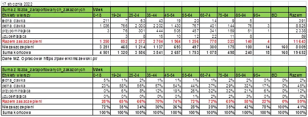
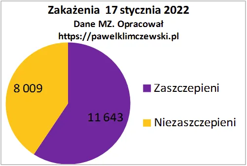

Czy rozum to przeżytek i komu przeszkadza?
Tylko człowiek w przyrodzie akumuluje abstrakcyjną wiedzę z pokolenia na pokolenie, wnioskuje, rozwiązuje trudne zadania logiczne, działa rozumnie. Rozumieć problem to znaczy mieć pełną władzę intelektualną nad obserwowanym zjawiskiem i co najważniejsze, panować nad nim dosłownie. Rozum pomaga nam przetrwać w sytuacjach nietypowych, zaskakujących. W krok za rozumem podąża inteligencja. Tak było od zawsze, ale już nie jest i trudno znaleźć moment zmiany.
W grudniu 2020 były dostępne dokumentacje preparatów mRNA i było tam wyraźnie napisane, że te preparaty nie zatrzymają transmisji a mogą co najwyżej tylko osłabiać skutki zakażeń, np. hipotetyczny stan ciężki choroby u "zaszczepionego" przejść łagodniej. Nic więcej, czytałem.

Tymczasem od początku programu "szczepień" obiecano chętnym super odporność na wszelkie zmartwienia. Gorzej być nie mogło, obserwowałem to w swoim środowisku. "Zaszczepieni", mimo często kiepskiego stanu zdrowia poczuli się jak nieśmiertelni i sterylni mikrobiologicznie i ruszyli w świat, do biur, do pociągów, do samolotów i gdzie tylko można. Skutki mamy jak na dłoni. W najnowszych danych z 17 stycznia 2022 -59% zakażonych to zaszczepieni. W wieku 35-74 to ponad 70%. W poprzednim wpisie raportowałem, że 1/4 zgonów "Na covid" to "zaszczepieni". I co teraz?

Gdyby zapytać człowieka rozumnego, co myśli o innych rozumnych ludziach, którzy mieli pełną wiedzę a wprowadzili dezinformację, jaką widzieliśmy, o cel takich działań, musi odpowiedzieć, że albo nie mieli rozumu albo chcieli, aby zarażonych było jak najwięcej. Trzeciego wyjścia nie ma.
Paweł Klimczewski